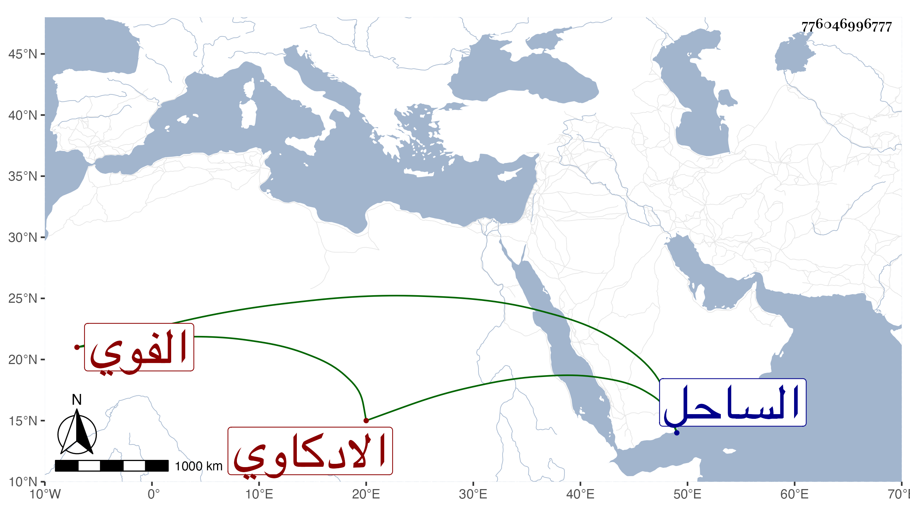

0902Sakhawi.DawLamic.ITO20230111-ara1.EIS1600.776046996777
Biography ID: 776046996777
الادكاوي نسبة لادكو بالقرب من الساحل إبرهيم بن عمر بن محمد وأحمد بن علي بن موسى أبو يوسف ورمضان بن عمر ابن مزروع وسلامة بن محمد بن أحمد بن إبرهيم وابنه الشمس محمد وتلميذه قاضيه عبد الرحمن بن إبرهيم بن أحمد بن محمد ومحمد بن أحمد بن أبي بكر الفوي وابنه عطاء الله ومحمد بن سيف الدين مقري وإجازته عند ابن سلامة .
